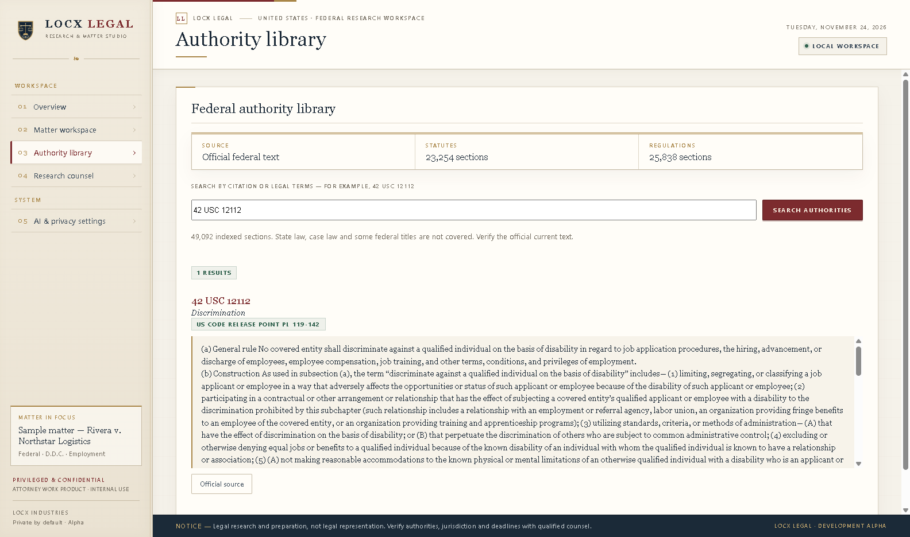
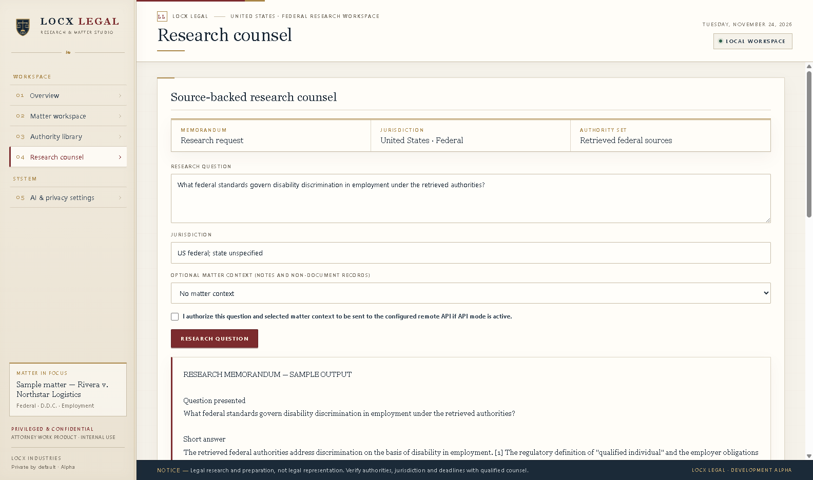
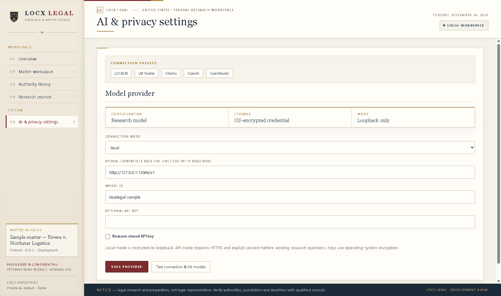

LOCX Legal
A local research and matter workspace with 49,092 federal authority sections indexed.

What it is
LOCX Legal is a local workspace for organizing a matter and examining the law behind it. It combines matter records and a docket with an indexed federal authority library, source-backed research answers, and explicit controls over whether any model runs locally or remotely.
The index holds 49,092 federal sections. The sample matter, notes and answer in the screenshots are fictional, made with a local mock provider to show the interface. They are not client work or legal advice.
read this first
"Legal research is not legal representation. Authorities, jurisdiction and deadlines must be verified by qualified counsel. AI output can be wrong."
LOCX Legal noticeThe five views




What it includes
- Opens with its bundled Electron runtime
- Isolated-profile QA: 6/6 checks passed
- Source QA 6/6 and Node tests 3/3 passed
- All five views visually reviewed; integrity manifest hashes 43 files
Knowledge-source rights, citation fidelity and currentness; AI reliability and safe-output review; privacy/security audit and clean-machine installation; portable runtime decision; verified live provider, installer and accessible-layout QA; legal review of claims and redistribution rights.